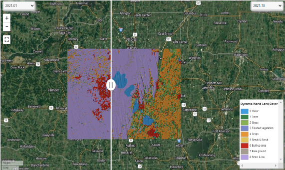

Land Use Land Cover change (Google API)
Google Earth is a virtual globe platform that provides users with access to a range of geospatial data, including satellite imagery, maps, terrain, and 3D buildings. It allows users to explore and learn about different parts of the world.
On the other hand, Earth Engine is a tool designed specifically for analyzing geospatial data. It provides a data catalog that is different from the Google Earth data catalog, and not all the data available in Google Earth is available for analysis in Earth Engine. Similarly, not all the data in Earth Engine is currently available for visualization in Google Earth. Earth Engine is primarily focused on analyzing and processing geospatial data, whereas Google Earth is focused on visualizing and exploring geospatial data.
** Vist my GitHub to view the code for analysis steps and visualization.

To generate two-period maps of land cover-land use in Dane County using Dynamic World data on Google Earth Engine, I tool the data for the years 2016 and 2022, filtered the data to include only Dane County, visualized parameters to display land cover-land use classes in different colors, created two separate maps, and compare them side by side to identify any changes in land use over the six-year period. This data can inform decision-making processes and future land use planning in the county.
To analyze the vegetation cover in a study area, I used Landsat 8 remote sensing images and Google Earth Engine to compute the Normalized Difference Vegetation Index (NDVI) values. This involves filtering the data to the time period of interest, calculating NDVI values using Landsat 8 data and the appropriate formula, setting visualization parameters to display NDVI values in different colors, and creating a map of the study area with the NDVI values overlaid on it. This information can help identify areas requiring additional vegetation management or restoration efforts and monitor changes in vegetation cover over time.

To create a Landsat timelapse animation GIF file, I used Google Earth Engine to filter Landsat data for a specific area and time period, set visualization parameters, and export the animation as a GIF file. This can provide valuable insights into land use and environmental changes over time, which can be used for monitoring, analysis, and public education purposes. The resulting timelapse animation is a dynamic and engaging way to show environmental changes and human impacts on the planet.
{kind=link}